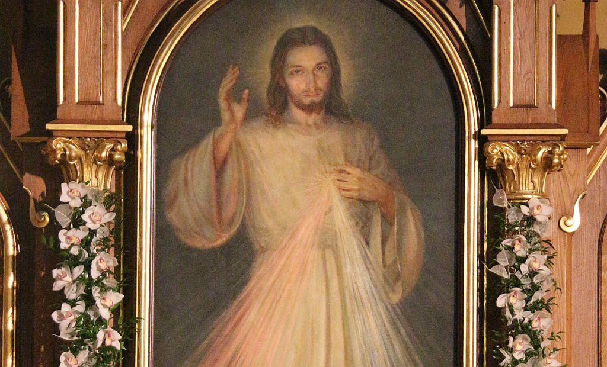
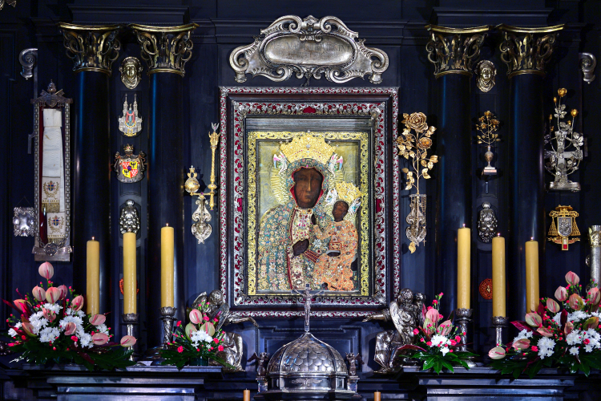

Komunia Duchowa

Sanktuarium Bożego Miłosierdzia w Krakowie‑Łagiewnikach
Jezu mój, wierzę, że jesteś prawdziwie obecny w Najświętszym Sakramencie. Kocham Cię nade wszystko i pragnę gorąco mieć Cię w duszy swojej. Ponieważ nie mogę Cię przyjąć teraz sakramentalnie, zawitaj przynajmniej duchowo do serca mego.
(pauza)
Jako już przybyłego, witam Cię i jednoczę się ściśle z Tobą. Nie dozwól mi się nigdy od Ciebie oddalić. Ojcze Przedwieczny, ofiaruję Ci Ciało i Krew, Duszę i Bóstwo najmilszego Syna Twego Jezusa Chrystusa, za grzechy moje, za dusze w czyśćcu cierpiące i za potrzeby Kościoła świętego. [1]

Modlitwa przy Komunii Świętej duchowej polecana przez Papieża Franciszka (Dom św. Marty, 19 marca 2020)
Kładę się u Twych stóp, o mój Jezu, i ofiarowuję Ci moje skruszone serce uniżone w swojej nicości i Twojej świętej obecności. Adoruję Cię w sakramencie Twej miłości, niewysłowionej Eucharystii. Pragnę przyjąć Ciebie w tym ubogim przybytku, jaki oferuje Ci mój umysł. Czekając na radość z sakramentalnej Komunii, pragnę przyjąć Cię w duchu. Przyjdź do mnie, o mój Jezu, kiedy ja, ze swojej strony, przychodzę do Ciebie! Niech Twoja miłość ogarnie moje całe jestestwo w życiu i śmierci. Wierzę w Ciebie, Tobie ufam, Ciebie miłuję. Niech się tak stanie. [2]